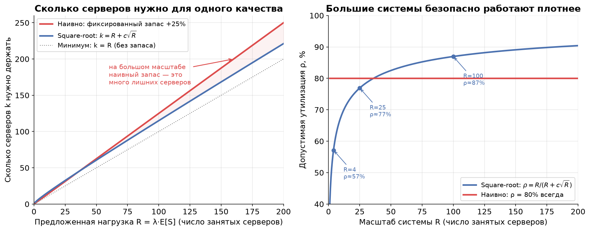
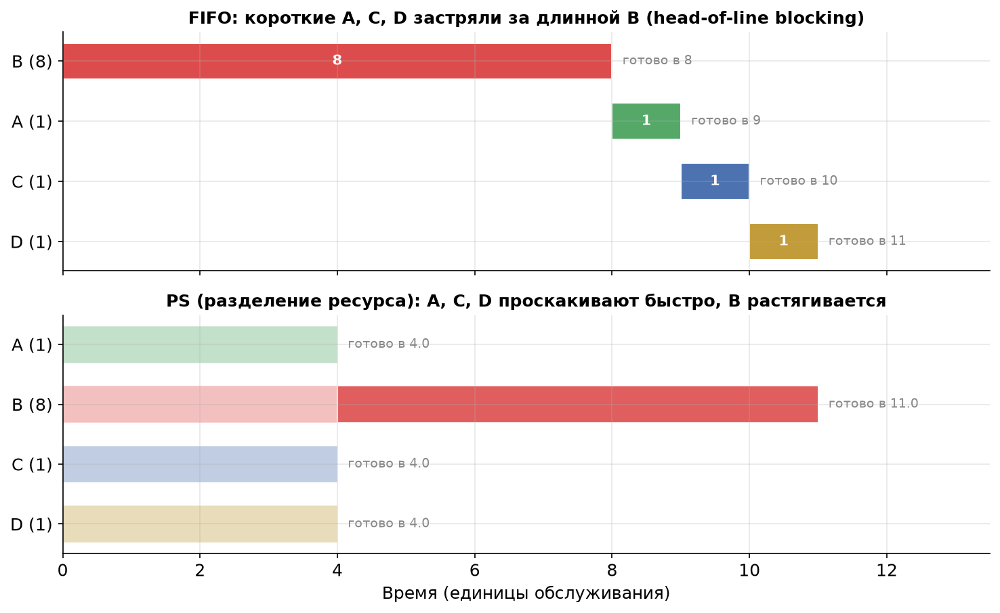
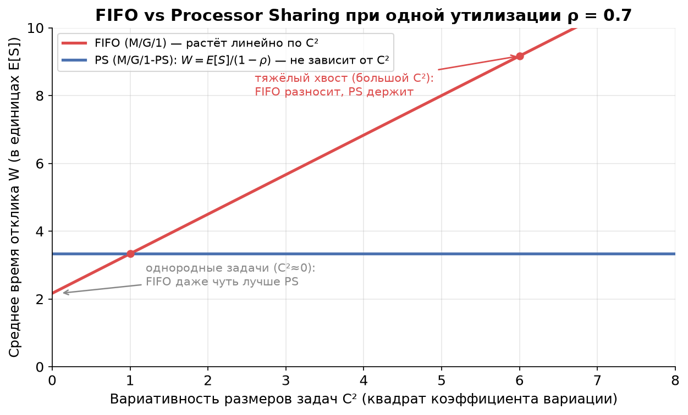

Урок 7. Масштабирование и планировщики
TL;DR: Чтобы держать прежнее качество при росте нагрузки, не нужно наращивать серверы пропорционально нагрузке — достаточно держать запас «свободной ёмкости» порядка квадратного корня из неё ($k \approx R + c\sqrt{R}$). Поэтому большие системы могут безопасно работать на более высокой утилизации, чем маленькие. А внутри одного сервера важно ещё и как раздаются ресурсы: FIFO (строго по очереди, как в Kafka-партиции) против Processor Sharing (всем понемногу, как CPU между потоками). В PS среднее время отклика зависит только от среднего размера задач и не чувствует их вариативность — спасение для тяжёлых хвостов.
В уроке 5 мы увидели по формуле Поллачека — Хинчина, что время ожидания взрывается при $\rho \to 1$ и сильно зависит от вариативности задач, а в уроке 6 — что бёрсты бьют даже при умеренной средней нагрузке. Естественный вопрос: как с этим жить, когда нагрузка растёт? В этом уроке — два рычага: сколько серверов добавлять (масштабирование) и как делить ресурс между задачами (планировщики).
Правило квадратного корня: масштаб работает на вас
Начнём с интуиции из жизни. Представьте кофейню. Если в час пик приходит в среднем 4 клиента, а обслуживание одного занимает столько же, сколько приходит следующий, то «в работе» в среднем 4 клиента — это и есть предложенная нагрузка (offered load):
$$R = \lambda \cdot E[S].$$
$R$ — это среднее число одновременно занятых серверов (в штуках, безразмерное). Чтобы не было очередей, серверов $k$ должно быть больше $R$ — нужен запас свободной ёмкости на случайные всплески.
Вопрос на миллион: на сколько больше? Наивная интуиция говорит «держи запас в процентах» — например, +25% серверов, то есть $k = 1{,}25 \cdot R$. Тогда утилизация всегда 80%, независимо от масштаба. Звучит разумно — но это переплата.
Правильный ответ даёт правило квадратного корня (square-root staffing):
$$k \approx R + c\sqrt{R},$$
где $c$ — коэффициент, задающий желаемое качество (обычно $c$ от 1 до 2: чем больше, тем короче очереди и выше шанс, что свободный сервер найдётся сразу). Запас — это слагаемое $c\sqrt{R}$, и оно растёт не как $R$, а как $\sqrt{R}$.
Почему именно корень
Глубокий вывод не нужен, нужна интуиция, и она простая — это закон больших чисел. Складываем $R$ независимых случайных «занятостей». Среднее суммы растёт линейно (как $R$), а вот разброс суммы — её стандартное отклонение — растёт только как $\sqrt{R}$. Случайные колебания нагрузки относительно среднего становятся всё мельче: при $R=4$ типичный всплеск — это $\pm 2$ от среднего (50%!), а при $R=400$ — это $\pm 20$ от среднего, то есть всего 5%. Большой системе достаточно куда меньшего относительного запаса, чтобы поглотить ту же по «качеству» случайность.
Именно поэтому запас имеет смысл держать пропорциональным $\sqrt{R}$, а не $R$: вы покрываете ровно тот масштаб флуктуаций, который реально возникает.

Левая панель: наивный фиксированный запас (красная) уходит всё дальше от честной потребности по мере роста нагрузки — на большом масштабе это десятки лишних серверов. Square-root-кривая (синяя) прижимается к диагонали $k=R$.
Правая панель — главное следствие. Допустимая утилизация растёт с масштабом:
$$\rho = \frac{R}{k} = \frac{R}{R + c\sqrt{R}} = \frac{1}{1 + c/\sqrt{R}}.$$
При $R=4$ и $c=1{,}5$ выходит $\rho \approx 57\%$ — маленькую систему приходится держать полупустой. При $R=100$ уже $\rho \approx 87\%$, при $R=400$ — около 93%. Это и есть экономия от масштаба (economy of scale): объединив десять маленьких пулов в один большой, вы при том же качестве работаете плотнее и тратите меньше железа.
Что это значит на практике
- Пул воркеров ML-инференса. Десять отдельных пулов по 4 GPU каждый, работающих на безопасных 57%, — это расточительство. Один общий пул на 40 GPU при том же качестве спокойно живёт на ~85%. Поэтому общий шлюз инференса с маршрутизацией на свободный воркер почти всегда эффективнее, чем жёстко прибитые мелкие пулы.
- Удвоение нагрузки не требует удвоения запаса. Если трафик вырос с $R=100$ до $R=200$, наивно вы бы добавили серверов «+25% от удвоенного». На деле абсолютный запас должен вырасти лишь с $1{,}5\sqrt{100}=15$ до $1{,}5\sqrt{200}\approx 21$ — на шесть серверов, а не вдвое.
- Осторожно с очень маленькими сервисами. Сервис из 2–3 инстансов нельзя нагружать на 80% «потому что так у больших» — у него относительные флуктуации огромны, и очередь вырастет. Маленькое держим попросторнее.
Планировщики: FIFO против Processor Sharing
Сколько серверов — это половина дела. Вторая половина: когда задачи всё-таки конкурируют за один ресурс, в каком порядке их обслуживать. Это дисциплина планирования (scheduling discipline).
Вернёмся к кассе супермаркета. Есть два способа обслуживать очередь:
- FIFO (First-In-First-Out) — строго по очереди. Кассир берёт первого клиента и доводит до конца, потом второго, и так далее. Кто пришёл раньше — уходит раньше.
- Processor Sharing (PS) — «всем понемногу». Представьте, что кассир делит внимание между всеми клиентами в зале сразу: пробил один товар у первого, один у второго, один у третьего, по кругу. Если в зале $n$ клиентов, каждый получает $1/n$ скорости кассира.
В реальных кассах так не делают, а вот в компьютерах — постоянно. Processor Sharing — это идеализация того, как ОС делит CPU между потоками и как GPU делит время между процессами: round-robin с очень мелкими квантами времени. Каждый поток выполняется чуть-чуть, потом передаёт управление следующему — настолько быстро, что кажется, будто все работают одновременно. В пределе бесконечно мелких квантов это и есть PS.
А вот Kafka-партиция — это чистый FIFO. Консьюмер читает сообщения из партиции строго по порядку оффсетов; следующее сообщение не начнёт обрабатываться, пока не завершено (закоммичено) текущее. Это фундаментальное свойство, на нём держатся гарантии порядка.
Кому какой планировщик выгоден
Ключевая разница — что происходит с короткой задачей, попавшей в систему вместе с длинной.
В FIFO короткая задача может застрять за длинной. Это head-of-line blocking («блокировка головой очереди»): даже если ваша задача — на одну миллисекунду, но перед ней встала задача на секунду, вы ждёте всю секунду. Никакой справедливости по размеру: порядок решает время прихода.
В PS короткие задачи проскакивают быстро, но длинные растягиваются. Поскольку ресурс делится, маленькая задача завершится почти сразу — ей нужно мало работы, а скорость она получает наравне со всеми. Зато длинная задача, пока вокруг толкутся короткие, тянет ресурс лишь частично и финиширует позже, чем финишировала бы, дай ей весь сервер целиком.
Посмотрим на одном примере. Пришли одновременно четыре задачи: одна длинная B (8 единиц работы) и три коротких — A, C, D (по 1 единице). В FIFO, как назло, первой в очереди оказалась B.

- FIFO: B доедает все 8 единиц, и только потом обслуживаются A, C, D. Короткие финишируют в моменты 9, 10, 11. Среднее время завершения по четырём задачам — 9,5.
- PS: пока активны все четыре, каждая получает 1/4 скорости. Короткие A, C, D набирают свою единицу работы и финишируют в момент 4 — втрое быстрее, чем в FIFO! B остаётся одна и доделывается к моменту 11 (чуть позже, чем её 8 «в одиночку»). Среднее время завершения — 5,75.
Короткие задачи в PS выиграли огромно, а длинная проиграла совсем немного. Если в вашем трафике много мелких задач и редкие гиганты (а это типичная картина с тяжёлыми хвостами из урока 4) — PS резко улучшает опыт большинства.
Эффект insensitivity: PS не боится вариативности
Теперь — самое красивое свойство PS, ради которого о нём вообще стоит знать. Для системы M/G/1-PS (пуассоновский входящий поток, произвольное распределение размеров задач, один разделяемый сервер) среднее время отклика равно:
$$E[W] = \frac{E[S]}{1 - \rho}.$$
Вглядитесь в формулу. В ней есть только среднее время обслуживания $E[S]$ и утилизация $\rho$. И больше ничего — ни дисперсии, ни коэффициента вариации, ни формы хвоста. Это и есть эффект нечувствительности (insensitivity): среднее время отклика в PS зависит только от среднего размера задач и совершенно не зависит от их вариативности $C^2$.
(Условия, при которых это работает: пуассоновский поход заявок, дисциплина именно PS, рассматриваем стационарный режим $\rho < 1$. Вывод опускаем — он не добавляет интуиции сверх уже сказанного: PS не даёт длинным задачам монополизировать сервер, поэтому одна аномально большая задача не блокирует остальных и не раздувает среднее.)
Сравните это с FIFO. По формуле Поллачека — Хинчина из урока 5 среднее время ожидания в M/G/1-FIFO растёт прямо пропорционально $(1 + C^2)$:
$$W_q^{\text{FIFO}} = \frac{\rho \, E[S] \, (1 + C^2)}{2(1 - \rho)}.$$
Вариативность бьёт по FIFO напрямую: чем разнороднее задачи, тем дольше очередь.

На графике при фиксированной $\rho = 0{,}7$: FIFO (красная) растёт линейно по $C^2$, PS (синяя) — ровная горизонталь. Две вещи стоит заметить:
- При $C^2 = 1$ (экспоненциальные размеры) линии пересекаются — здесь FIFO и PS дают одинаковое среднее время отклика. Это не совпадение: M/M/1 и M/M/1-PS имеют одинаковое среднее $W$.
- При $C^2 < 1$ (однородные задачи) FIFO даже чуть лучше — потому что не наказывает короткие задачи лишним переключением. А вот правее, на тяжёлых хвостах, FIFO улетает вверх, тогда как PS держит планку.
Практический вывод
Сведём всё к одному правилу выбора:
- Задачи однородные (низкий $C^2$, все примерно одного размера) — берите FIFO. Он не хуже по среднему, проще, дешевле и сохраняет порядок. Городить разделение ресурса незачем.
- Вариативность высокая и её не убрать (тяжёлый хвост, мешанина из мелких и гигантских задач) — разделение ресурса (PS) спасает от хвостов: среднее время отклика перестаёт чувствовать дисперсию, а короткие задачи не стоят за гигантами.
И возвращаясь к нашим героям:
- Kafka-партиция = строгий FIFO. Если в одну партицию валятся вперемешку лёгкие и тяжёлые сообщения, тяжёлое заблокирует голову очереди и раздует lag по всем лёгким (head-of-line blocking в чистом виде). Лечится не сменой планировщика — Kafka его не меняет, — а разнесением: тяжёлые и лёгкие сообщения в разные топики/партиции, чтобы у каждого класса была своя очередь и они не блокировали друг друга. Это «ручной» способ получить эффект, похожий на разделение ресурса.
- GPU/CPU time-slicing ≈ PS. Когда несколько процессов делят один GPU через time-slicing (или несколько потоков — одно ядро), вы фактически в режиме PS: мелкие инференс-запросы проскакивают, не дожидаясь, пока крупный батч досчитается. Для пула ML-инференса с разнородными размерами тензоров это удобно — но помните, что за нечувствительность к вариативности вы платите растягиванием самых крупных задач.
Главное из урока
- Предложенная нагрузка $R = \lambda E[S]$ — это среднее число одновременно занятых серверов. Серверов нужно $k > R$ с запасом на флуктуации.
- Правило квадратного корня: запас держат пропорционально $\sqrt{R}$, а не $R$: $k \approx R + c\sqrt{R}$. Причина — флуктуации нагрузки растут как $\sqrt{R}$ (закон больших чисел), а не линейно.
- Экономия от масштаба: допустимая утилизация $\rho = R/(R+c\sqrt{R})$ растёт с масштабом. Большой общий пул работает плотнее и дешевле, чем россыпь маленьких. Удвоение нагрузки не требует удвоения запаса.
- FIFO (Kafka-партиция) обслуживает строго по очереди — короткая задача может застрять за длинной (head-of-line blocking). Processor Sharing (CPU/GPU time-slicing) делит ресурс между всеми сразу — короткие проскакивают, длинные растягиваются.
- Insensitivity: в M/G/1-PS среднее время отклика $E[W] = E[S]/(1-\rho)$ зависит только от среднего размера задач и не чувствует вариативность $C^2$. В FIFO вариативность бьёт по ожиданию напрямую (Поллачек — Хинчин).
- Правило выбора: однородные задачи → FIFO (проще и не хуже); высокая неустранимая вариативность → разделение ресурса (PS) спасает от тяжёлых хвостов. В Kafka «разделение» имитируют, разнося тяжёлые и лёгкие сообщения по разным топикам.
В следующем (итоговом) уроке мы соберём всё вместе на реальном кейсе: почему механизм SelfPing — отправка пустых задач каждые 10 мс — ловит проблемы с latency, невидимые на обычных графиках утилизации.
Проверь себя
Задачи
Задача 1
Сервис ML-инференса обрабатывает $\lambda = 800$ запросов в секунду, среднее время обслуживания одного запроса на воркере $E[S] = 100$ мс. Для целевого качества выбран коэффициент $c = 2$.
- Найдите предложенную нагрузку $R$ и число воркеров $k$ по правилу квадратного корня.
- Сравните с «наивным» подходом: держать фиксированный запас +25% серверов. Сколько воркеров сэкономили?
- На какой утилизации $\rho$ работает square-root-вариант?
Решение
1. Предложенная нагрузка и square-root staffing.
$$R = \lambda \cdot E[S] = 800 \cdot 0{,}1\,\text{с} = 80.$$
В среднем заняты 80 воркеров. По правилу квадратного корня:
$$k_{\text{sqrt}} = R + c\sqrt{R} = 80 + 2\sqrt{80} = 80 + 2 \cdot 8{,}94 \approx 80 + 17{,}9 = 97{,}9.$$
Округляем вверх: $k_{\text{sqrt}} = 98$ воркеров.
2. Наивный подход и экономия.
Фиксированный запас +25%:
$$k_{\text{naive}} = 1{,}25 \cdot R = 1{,}25 \cdot 80 = 100.$$
Разница невелика — 2 воркера — потому что $R=80$ ещё не очень большой. Но обратите внимание, как разрыв растёт с масштабом: при $R = 800$ (трафик ×10) было бы $k_{\text{sqrt}} = 800 + 2\sqrt{800} \approx 857$ против $k_{\text{naive}} = 1000$ — экономия уже 143 воркера, около 14% железа.
3. Утилизация.
$$\rho = \frac{R}{k_{\text{sqrt}}} = \frac{80}{98} \approx 0{,}816 = 81{,}6\%.$$
Сервис безопасно живёт на ~82% — заметно плотнее, чем мелкий сервис на пару воркеров мог бы себе позволить.
Задача 2
Один воркер обслуживает поток заявок с утилизацией $\rho = 0{,}8$ и средним временем обслуживания $E[S] = 50$ мс. Размеры задач разнородные: $C^2 = 4$ (тяжёлый хвост).
- Найдите среднее время отклика $E[W]$, если воркер использует FIFO.
- Найдите $E[W]$, если воркер использует Processor Sharing.
- Во сколько раз PS лучше? Что изменится, если хвост станет вдвое тяжелее ($C^2 = 8$)?
Решение
Полное время отклика $E[W] = E[S] + W_q$ (ожидание плюс само обслуживание).
1. FIFO (формула Поллачека — Хинчина).
$$W_q^{\text{FIFO}} = \frac{\rho\, E[S]\,(1 + C^2)}{2(1 - \rho)} = \frac{0{,}8 \cdot 50 \cdot (1 + 4)}{2 \cdot (1 - 0{,}8)} = \frac{0{,}8 \cdot 50 \cdot 5}{0{,}4} = \frac{200}{0{,}4} = 500\ \text{мс}.$$
$$E[W]^{\text{FIFO}} = 50 + 500 = 550\ \text{мс}.$$
2. Processor Sharing (insensitivity).
$$E[W]^{\text{PS}} = \frac{E[S]}{1 - \rho} = \frac{50}{1 - 0{,}8} = \frac{50}{0{,}2} = 250\ \text{мс}.$$
Дисперсия в формулу не входит — $C^2$ не используется вовсе.
3. Сравнение и более тяжёлый хвост.
$$\frac{E[W]^{\text{FIFO}}}{E[W]^{\text{PS}}} = \frac{550}{250} = 2{,}2 \ \text{раза в пользу PS}.$$
Если хвост утяжелить до $C^2 = 8$:
$$W_q^{\text{FIFO}} = \frac{0{,}8 \cdot 50 \cdot (1 + 8)}{0{,}4} = \frac{360}{0{,}4} = 900\ \text{мс}, \quad E[W]^{\text{FIFO}} = 950\ \text{мс}.$$
А PS не дрогнул: $E[W]^{\text{PS}} = 250$ мс по-прежнему. Теперь PS лучше уже в $950/250 = 3{,}8$ раза. Вывод: чем тяжелее хвост, тем сильнее разделение ресурса выигрывает у FIFO — ровно то, что обещает эффект нечувствительности.